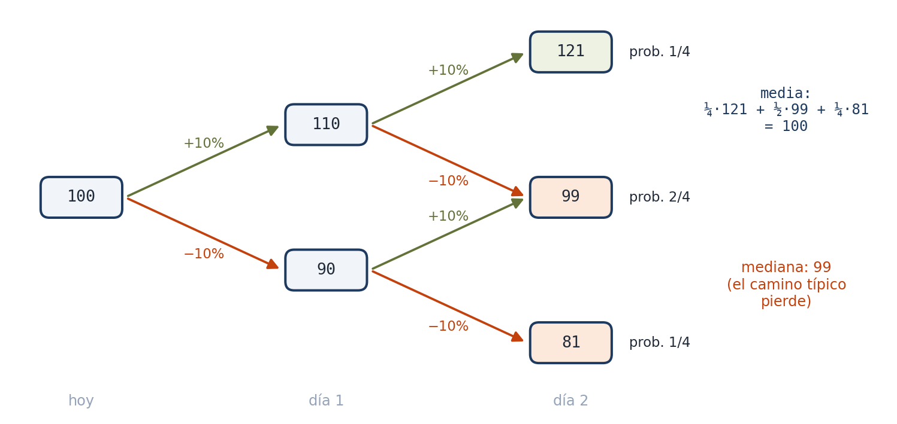
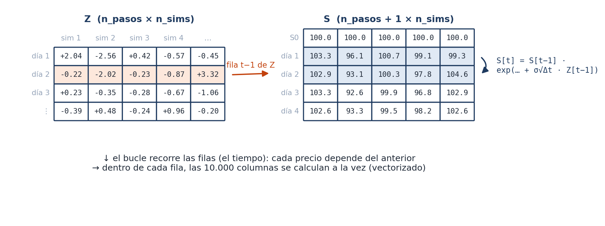
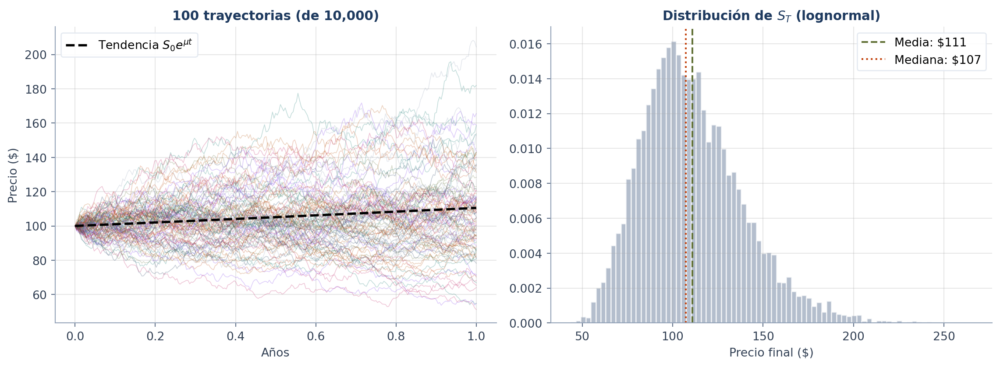
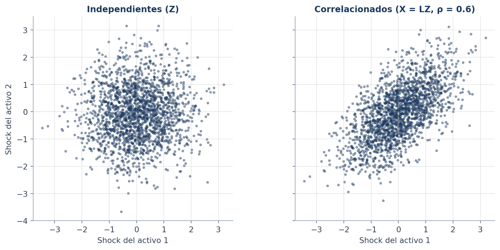
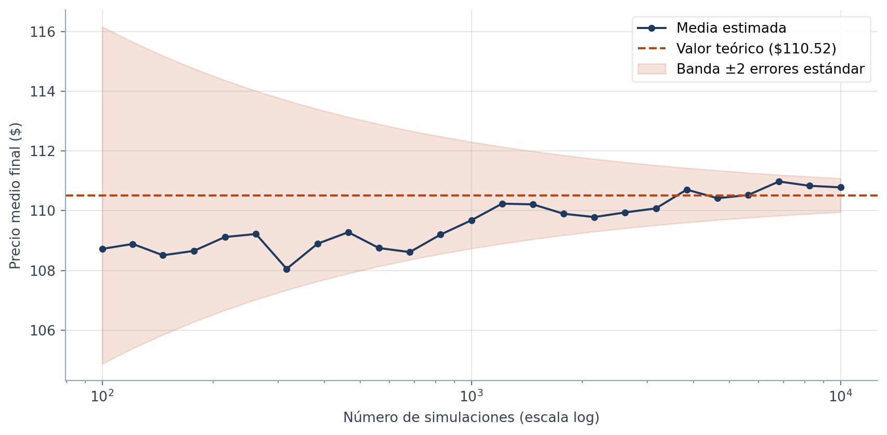
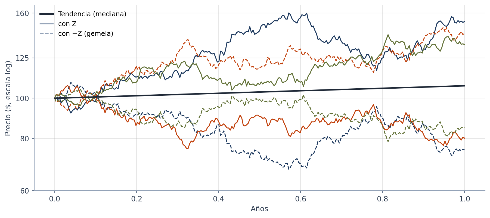
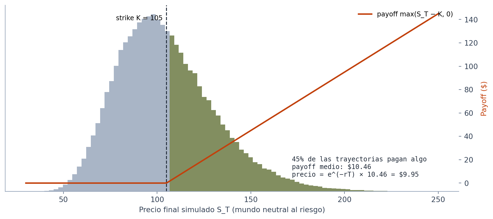

flowchart LR
M["<b>1 · Modelar</b><br/>dinámica del precio<br/><i>GBM, saltos, Heston…</i>"] --> S["<b>2 · Simular</b><br/>N trayectorias<br/>independientes"]
S --> A["<b>3 · Agregar</b><br/>media · percentil ·<br/>probabilidad · payoff"]
A --> E(["estimación<br/>± error estándar s/√N"])
classDef paso fill:#e0e9f4,stroke:#1e3a5f,color:#1f2937
classDef fin fill:#eef2e3,stroke:#637238,color:#1f2937
class M,S,A paso
class E fin
13 Capítulo 13: Simulación de Monte Carlo
Movimiento Browniano Geométrico y generación de escenarios
Resumen
Cuando un problema no tiene fórmula cerrada, la simulación de Monte Carlo lo resuelve por fuerza bruta inteligente: generar miles de futuros posibles y estudiar su distribución. Presentamos el Movimiento Browniano Geométrico como modelo canónico del precio de un activo, simulamos trayectorias de forma vectorizada, calculamos VaR y Expected Shortfall por simulación, estudiamos la convergencia del método y lo aceleramos con variables antitéticas. Cerramos valuando una opción, el puente hacia el Módulo 4.
Introducción
Hay preguntas financieras que no tienen fórmula: ¿cuál es la distribución del valor de mi cartera en 5 años si rebalanceo cada mes? ¿cuánto vale una opción cuyo pago depende de la trayectoria del precio y no solo del valor final? Para ese tipo de problemas existe el método de Monte Carlo (Glasserman 2003), llamado así por el casino: en lugar de resolver el problema analíticamente, tiramos los dados miles de veces —simulamos miles de futuros posibles— y estudiamos la distribución de resultados.
La receta general tiene tres pasos:
- Modelar la dinámica de la variable incierta (para nosotros: el precio de un activo).
- Simular muchas trayectorias independientes de ese modelo.
- Agregar: estimar lo que nos interese (media, percentiles, probabilidad de un evento) sobre las trayectorias.
El paso 1 exige elegir un modelo del precio. Empezamos por el más importante de todos: el Movimiento Browniano Geométrico.
import numpy as np
import matplotlib.pyplot as plt
from scipy import stats
rng = np.random.default_rng(42)13.1 El movimiento browniano geométrico (GBM)
13.1.1 La idea
¿Cómo modelar el precio de una acción? Dos observaciones empíricas nos guían:
- Los precios tienen una tendencia de largo plazo (el mercado sube “en promedio”).
- Alrededor de esa tendencia hay ruido permanente e impredecible.
El GBM formaliza exactamente eso. En su forma de ecuación diferencial estocástica:
\[\frac{dS}{S} = \mu \, dt + \sigma \, dW\]
Leela por partes: el retorno instantáneo del activo (\(dS/S\)) tiene un componente determinístico \(\mu\,dt\) (el drift, la tendencia) y un componente aleatorio \(\sigma\,dW\) (la difusión: ruido gaussiano escalado por la volatilidad). Es literalmente “tendencia + ruido”.
Para simular necesitamos la versión discreta. Integrando la ecuación (los detalles requieren cálculo estocástico, pero el resultado es lo que importa):
\[S_{t+\Delta t} = S_t \cdot \exp\!\Big[\big(\mu - \tfrac{\sigma^2}{2}\big)\Delta t + \sigma \sqrt{\Delta t} \, Z\Big], \qquad Z \sim N(0,1)\]
Nota¿De dónde sale el −σ²/2?
Ese término sorprende la primera vez. La intuición: la exponencial es convexa, así que el ruido simétrico en el exponente produce resultados asimétricos en el precio (una suba del 10% seguida de una baja del 10% no te devuelve al punto de partida: \(1.1 \times 0.9 = 0.99\)). El término \(-\sigma^2/2\) corrige exactamente ese efecto para que el retorno esperado del precio sea \(\mu\). Sin la corrección, la simulación tendría un sesgo alcista espurio.
La Figura 13.2 muestra el efecto con el ejemplo más chico posible: dos días, cada uno con +10% o −10% con igual probabilidad. El precio medio no se mueve, pero el resultado típico (la mediana) pierde. Esa brecha entre media y mediana es exactamente lo que el término \(-\sigma^2/2\) lleva en cuenta.

Dos propiedades del GBM que conviene tener presentes:
- El precio nunca se hace negativo (es una exponencial), realista para acciones.
- Los retornos logarítmicos son normales, así que el precio final es lognormal: asimétrico, con una cola larga hacia arriba.
13.1.2 Simulación vectorizada
Simulamos todas las trayectorias a la vez con una matriz de shocks: filas = pasos de tiempo, columnas = simulaciones. El único bucle recorre el tiempo (cada precio depende del anterior); las 10.000 simulaciones avanzan en paralelo gracias a la vectorización del Capítulo 5.
La Figura 13.3 muestra la forma de los datos antes de escribir el código: una fila por día y una columna por futuro posible.

# Parámetros del activo y de la simulación
S0 = 100 # precio inicial
mu = 0.10 # drift anual (10%)
sigma = 0.25 # volatilidad anual (25%)
T = 1.0 # horizonte: 1 año
n_pasos = 252 # pasos diarios
n_sims = 10_000 # trayectorias
dt = T / n_pasos
# Matriz de shocks: un N(0,1) por paso y por simulación
Z = rng.standard_normal((n_pasos, n_sims))
# Simulación: el bucle recorre el tiempo; las columnas avanzan en paralelo
S = np.empty((n_pasos + 1, n_sims))
S[0] = S0
for t in range(1, n_pasos + 1):
S[t] = S[t-1] * np.exp((mu - 0.5 * sigma**2) * dt + sigma * np.sqrt(dt) * Z[t-1])
print(f"Precio inicial: ${S0:.2f}")
print(f"Precio medio final: ${S[-1].mean():.2f} (teórico: ${S0 * np.exp(mu * T):.2f})")
print(f"Precio mediano final: ${np.median(S[-1]):.2f}")
print(f"Rango simulado: ${S[-1].min():.2f} — ${S[-1].max():.2f}")Precio inicial: $100.00
Precio medio final: $110.78 (teórico: $110.52)
Precio mediano final: $107.23
Rango simulado: $43.61 — $265.43Verificación de cordura: la media simulada coincide con la teórica \(E[S_T] = S_0 e^{\mu T}\). Notá también que la mediana está por debajo de la media: es la asimetría lognormal en acción (unas pocas trayectorias excelentes tiran el promedio hacia arriba).
fig, axes = plt.subplots(1, 2, figsize=(12, 4.5))
# Panel 1: una muestra de trayectorias
ax = axes[0]
tiempo = np.arange(n_pasos + 1) / 252
ax.plot(tiempo, S[:, :100], alpha=0.25, linewidth=0.6)
ax.plot(tiempo, S0 * np.exp(mu * tiempo), "k--", linewidth=2, label="Tendencia $S_0 e^{\\mu t}$")
ax.set_title(f"100 trayectorias (de {n_sims:,})")
ax.set_xlabel("Años")
ax.set_ylabel("Precio ($)")
ax.legend()
ax.grid(True, alpha=0.3)
# Panel 2: distribución de precios finales
ax = axes[1]
ax.hist(S[-1], bins=80, density=True, alpha=0.7, color="#94a3b8", edgecolor="white")
ax.axvline(S[-1].mean(), color="#637238", linestyle="--",
label=f"Media: ${S[-1].mean():.0f}")
ax.axvline(np.median(S[-1]), color="#c2410c", linestyle=":",
label=f"Mediana: ${np.median(S[-1]):.0f}")
ax.set_title("Distribución de $S_T$ (lognormal)")
ax.set_xlabel("Precio final ($)")
ax.legend()
ax.grid(True, alpha=0.3)
plt.tight_layout()
plt.show()
El panel izquierdo de la Figura 13.4 es el “abanico de futuros”: todas las trayectorias arrancan del mismo punto y se dispersan con el tiempo. El derecho resume dónde terminan: la forma asimétrica con cola derecha larga es la distribución lognormal.
13.2 VaR y Expected Shortfall por Monte Carlo
En el Capítulo 11 calculamos VaR y ES con dos métodos: paramétrico (asume normal) e histórico (usa el pasado). Monte Carlo es el tercer método, y el más flexible: la distribución de pérdidas sale de las trayectorias simuladas, con el modelo que queramos. Hoy el modelo es GBM; en el próximo capítulo será uno con saltos, y el código de abajo no cambia.
valor_portafolio = 10_000_000
retornos_sim = S[-1] / S0 - 1 # retorno de cada trayectoria a 1 año
var_95 = -np.percentile(retornos_sim, 5) * valor_portafolio
umbral = np.percentile(retornos_sim, 5)
es_95 = -retornos_sim[retornos_sim <= umbral].mean() * valor_portafolio
print(f"Sobre un portafolio de ${valor_portafolio/1e6:.0f}M, horizonte 1 año:")
print(f" VaR 95% (Monte Carlo): ${var_95:>12,.0f}")
print(f" ES 95% (Monte Carlo): ${es_95:>12,.0f}")Sobre un portafolio de $10M, horizonte 1 año:
VaR 95% (Monte Carlo): $ 2,921,024
ES 95% (Monte Carlo): $ 3,594,30813.3 Varios activos a la vez: shocks correlacionados
Hasta acá simulamos un solo activo. Una cartera tiene varios, y sus precios no se mueven de manera independiente: si simulamos cada activo con sus propios shocks, sin relación con los de los demás, estamos suponiendo correlación cero, y el Capítulo 8 mostró que el riesgo de una cartera depende justamente de las correlaciones. Hace falta generar shocks que tengan la correlación que queremos.
La herramienta estándar es la descomposición de Cholesky (Glasserman 2003). Toda matriz de correlaciones \(\mathbf{C}\) se puede escribir como \(\mathbf{C} = \mathbf{L}\mathbf{L}^\top\), con \(\mathbf{L}\) triangular inferior. Si \(\mathbf{Z}\) es un vector de normales estándar independientes, entonces
\[\mathbf{X} = \mathbf{L}\,\mathbf{Z}\]
es un vector de normales estándar con matriz de correlaciones \(\mathbf{C}\). Con dos activos y correlación \(\rho\) la cuenta se puede hacer a mano: \(X_1 = Z_1\) y \(X_2 = \rho Z_1 + \sqrt{1-\rho^2}\,Z_2\). El segundo shock toma una parte del primero y completa el resto con ruido propio, en la proporción justa para que su varianza siga siendo 1.
rng_c = np.random.default_rng(7) # generador propio: no altera el resto del capítulo
mus = np.array([0.10, 0.06]) # drift anual de cada activo
sigmas = np.array([0.25, 0.12]) # volatilidad anual de cada activo
rho = 0.6
corr = np.array([[1.0, rho],
[rho, 1.0]])
L = np.linalg.cholesky(corr) # corr = L @ L.T
Z_ind = rng_c.standard_normal((n_sims, 2)) # shocks independientes, una fila por simulación
X = Z_ind @ L.T # shocks correlacionados
print("L =")
print(L.round(4))
print(f"Correlación de los shocks independientes: {np.corrcoef(Z_ind.T)[0, 1]:+.3f}")
print(f"Correlación de los shocks transformados: {np.corrcoef(X.T)[0, 1]:+.3f} (objetivo: {rho})")L =
[[1. 0. ]
[0.6 0.8]]
Correlación de los shocks independientes: +0.009
Correlación de los shocks transformados: +0.609 (objetivo: 0.6)La matriz \(\mathbf{L}\) reproduce la fórmula de dos activos: su segunda fila es \((\rho, \sqrt{1-\rho^2}) = (0.6, 0.8)\). Y la correlación muestral de los shocks transformados, 0.609, queda cerca del objetivo; la diferencia es error de muestreo. La Figura 13.5 muestra el efecto de la transformación sobre la nube de puntos.
fig, axes = plt.subplots(1, 2, figsize=(10, 4.6), sharex=True, sharey=True)
for ax, datos, titulo in [(axes[0], Z_ind, "Independientes (Z)"),
(axes[1], X, f"Correlacionados (X = LZ, ρ = {rho})")]:
ax.scatter(datos[:2000, 0], datos[:2000, 1], s=6, alpha=0.4, color="#1e3a5f")
ax.set_title(titulo)
ax.set_xlabel("Shock del activo 1")
ax.set_aspect("equal")
ax.grid(True, alpha=0.3)
axes[0].set_ylabel("Shock del activo 2")
plt.tight_layout()
plt.show()
Con los shocks correlacionados, simular la cartera es repetir lo que ya hicimos, activo por activo. Como solo necesitamos el valor final, usamos la solución exacta del GBM en un único paso de un año. Para medir cuánto pesa la correlación calculamos el VaR de una cartera con la mitad del capital en cada activo, con tres valores de \(\rho\) y los mismos shocks de base.
pesos = np.array([0.5, 0.5])
def var_cartera(rho):
"""VaR 95% a 1 año de la cartera para una correlación dada."""
L = np.linalg.cholesky(np.array([[1.0, rho], [rho, 1.0]]))
X = Z_ind @ L.T
# Valor final por cada peso invertido en cada activo: GBM exacto, un solo paso
crecimiento = np.exp((mus - 0.5 * sigmas**2) * T + sigmas * np.sqrt(T) * X)
ret_cartera = crecimiento @ pesos - 1
return -np.percentile(ret_cartera, 5) * valor_portafolio
for r in [0.0, 0.6, 0.95]:
print(f"rho = {r:<4} VaR 95% = ${var_cartera(r):>12,.0f}")rho = 0.0 VaR 95% = $ 1,434,696
rho = 0.6 VaR 95% = $ 1,903,900
rho = 0.95 VaR 95% = $ 2,142,532Los dos activos son los mismos en las tres filas; lo único que cambia es cuánto se mueven juntos. Pasar de correlación cero a 0.6 aumenta el VaR un 33%, y con 0.95 el aumento llega al 49%. Quien simula una cartera con shocks independientes informa el primer número cuando el correcto puede ser el tercero. Es el mecanismo de los dos casos del Capítulo 12: modelos que suponían correlaciones bajas en mercados donde, en la crisis, todo se movió a la vez.
El procedimiento se extiende sin cambios a más activos (la matriz de correlaciones es más grande y np.linalg.cholesky hace el resto) y a trayectorias completas, aplicando \(\mathbf{L}\) a los shocks de cada paso.
13.4 ¿Cuántas simulaciones son suficientes? Convergencia
Monte Carlo da una estimación, no un valor exacto, y su error decrece con la raíz del número de simulaciones: \(\text{error} \propto 1/\sqrt{N}\). Esa raíz es una mala noticia práctica: para ganar un dígito de precisión hay que multiplicar las simulaciones por 100.
ns =np.unique(np.logspace(2, 4, 25).astype(int))
medias = [S[-1, :n].mean() for n in ns]
teorico = S0 * np.exp(mu * T)
# Banda de error teórica: ±2 desvíos del estimador de la media
sd_ST = S[-1].std()
banda = 2 * sd_ST / np.sqrt(ns)
fig, ax = plt.subplots(figsize=(9, 4.5))
ax.plot(ns, medias, "o-", color="#1e3a5f", markersize=4, label="Media estimada")
ax.axhline(teorico, color="#c2410c", linestyle="--", label=f"Valor teórico (${teorico:.2f})")
ax.fill_between(ns, teorico - banda, teorico + banda, alpha=0.15, color="#c2410c",
label="Banda ±2 errores estándar")
ax.set_xscale("log")
ax.set_xlabel("Número de simulaciones (escala log)")
ax.set_ylabel("Precio medio final ($)")
ax.legend()
ax.grid(True, alpha=0.3)
plt.tight_layout()
plt.show()
En la Figura 13.6, la estimación “baila” dentro de la banda teórica y se aquieta a medida que \(N\) crece. Regla práctica: reportá siempre el error estándar de tu estimación Monte Carlo (\(s/\sqrt{N}\)), no solo el número.
13.4.1 Reducción de varianza: variables antitéticas
¿Se puede lograr más precisión sin más simulaciones? Sí: hay toda una familia de técnicas de reducción de varianza. La más simple y elegante: las variables antitéticas. La idea: por cada shock \(Z\) que uses, usá también \(-Z\). Cada trayectoria “optimista” queda emparejada con su gemela “pesimista”, los errores de ambas se compensan, y el promedio del par es mucho más estable que dos trayectorias independientes.
La Figura 13.7 muestra tres de esos pares: cada trayectoria tiene una gemela que recibe exactamente los shocks opuestos y queda reflejada del otro lado de la tendencia.

def precio_final_gbm(Z):
"""Precio final S_T dado un vector de shocks acumulados por trayectoria."""
log_ST = (np.log(S0) + (mu - 0.5 * sigma**2) * T
+ sigma * np.sqrt(dt) * Z.sum(axis=0))
return np.exp(log_ST)
n_pares = n_sims // 2
Z_half = rng.standard_normal((n_pasos, n_pares))
# Método estándar: n_sims trayectorias independientes
ST_std = precio_final_gbm(rng.standard_normal((n_pasos, n_sims)))
# Método antitético: n_pares trayectorias + sus espejos (mismo costo total)
ST_pos = precio_final_gbm(Z_half)
ST_neg = precio_final_gbm(-Z_half)
ST_anti = 0.5 * (ST_pos + ST_neg) # promedio por par
print(f"{'':24}{'Estimación':>12}{'Error estándar':>16}")
print(f"{'Estándar':<24}{ST_std.mean():>12.3f}{ST_std.std()/np.sqrt(n_sims):>16.4f}")
print(f"{'Antitético':<24}{ST_anti.mean():>12.3f}{ST_anti.std()/np.sqrt(n_pares):>16.4f}")
print(f"\nValor teórico: {teorico:.3f}") Estimación Error estándar
Estándar 110.682 0.2817
Antitético 110.449 0.0671
Valor teórico: 110.517Con el mismo costo computacional, el error estándar del método antitético es visiblemente menor. En simulaciones industriales (pricing de exóticos, XVA), estas técnicas marcan la diferencia entre horas y minutos.
Simulador · Laboratorio de Monte Carlo
Las tres piezas de este capítulo con controles: el abanico de trayectorias y la distribución de \(S_T\) de la Figura 13.4, y la convergencia de la Figura 13.6. “Nueva muestra” vuelve a tirar los dados; mover los demás controles conserva la misma muestra, así ves cómo se estiran las mismas trayectorias. Arranca con los parámetros del capítulo. Los números no coinciden con los impresos arriba porque el navegador usa otro generador aleatorio, pero los patrones sí.
13.5 Puente al Módulo 4: valuar una opción por Monte Carlo
Cerremos con el uso más famoso de Monte Carlo en finanzas. Una call europea da derecho a comprar el activo a precio \(K\) en la fecha \(T\); su pago final es \(\max(S_T - K, 0)\). Bajo valuación neutral al riesgo (lo desarrollamos en el Capítulo 18), su precio es el pago esperado descontado, simulando con drift igual a la tasa libre de riesgo \(r\):
\[C = e^{-rT} \cdot E\big[\max(S_T - K, 0)\big]\]
r = 0.05 # tasa libre de riesgo
K = 105 # strike
# Simulamos S_T con drift r (mundo neutral al riesgo)
Z_rn = rng.standard_normal(200_000)
ST_rn = S0 * np.exp((r - 0.5 * sigma**2) * T + sigma * np.sqrt(T) * Z_rn)
payoff = np.maximum(ST_rn - K, 0)
precio_mc = np.exp(-r * T) * payoff.mean()
error_mc = np.exp(-r * T) * payoff.std() / np.sqrt(len(payoff))
# Comparación con la fórmula cerrada de Black-Scholes
d1 = (np.log(S0/K) + (r + 0.5*sigma**2)*T) / (sigma*np.sqrt(T))
d2 = d1 - sigma*np.sqrt(T)
precio_bs = S0 * stats.norm.cdf(d1) - K * np.exp(-r*T) * stats.norm.cdf(d2)
print(f"Precio call por Monte Carlo: ${precio_mc:.3f} ± {2*error_mc:.3f}")
print(f"Precio call Black-Scholes: ${precio_bs:.3f}")Precio call por Monte Carlo: $9.954 ± 0.076
Precio call Black-Scholes: $10.002La Figura 13.8 muestra qué está promediando la simulación: la mayoría de las trayectorias terminan por debajo del strike y pagan cero; el precio sale de las que terminan arriba.

La simulación reproduce la fórmula cerrada, y esa es justamente la gracia: para una call europea Black-Scholes ya existe, pero para opciones path-dependent (asiáticas, barrera) o con modelos más ricos que el GBM, la fórmula no existe y Monte Carlo es el camino. Volveremos sobre esto en el Módulo 4.
13.5.1 Variables de control: usar lo que ya se sabe
Las variables antitéticas reducen el error emparejando shocks. La segunda técnica clásica, las variables de control, aprovecha otra fuente de información: una cantidad relacionada con la que buscamos y cuyo valor esperado conocemos exactamente (Glasserman 2003).
En la valuación de la call hay una candidata evidente. El precio final descontado, \(e^{-rT} S_T\), tiene esperanza \(S_0\) en el mundo neutral al riesgo, sin necesidad de simular nada. La simulación también lo estima, y su estimación tiene un error que podemos medir: si en esta muestra el promedio de \(e^{-rT} S_T\) quedó por encima de \(S_0\), salieron demasiadas trayectorias altas, y el payoff de la call, que crece con \(S_T\), también quedó sobreestimado. La corrección consiste en restarle al payoff una parte de ese error conocido:
\[\hat{C}_{control} = \overline{X} - \beta\,\big(\overline{Y} - S_0\big), \qquad \beta = \frac{\text{Cov}(X, Y)}{\text{Var}(Y)}\]
donde \(X\) es el payoff descontado e \(Y\) el precio final descontado. El coeficiente \(\beta\) es la pendiente de una regresión de \(X\) sobre \(Y\), y es el que hace mínima la varianza del estimador.
X_desc = np.exp(-r * T) * payoff # lo que queremos promediar
Y_desc = np.exp(-r * T) * ST_rn # variable de control: su media exacta es S0
beta = np.cov(X_desc, Y_desc)[0, 1] / Y_desc.var(ddof=1)
X_ctrl = X_desc - beta * (Y_desc - S0)
error_ctrl = X_ctrl.std() / np.sqrt(len(X_ctrl))
print(f"Correlación entre el payoff y el precio final: {np.corrcoef(X_desc, Y_desc)[0, 1]:.3f}")
print(f"Media simulada del control: {Y_desc.mean():.3f} (exacta: {S0})")
print(f"\nSin control: ${X_desc.mean():.3f} ± {2 * error_mc:.3f}")
print(f"Con control: ${X_ctrl.mean():.3f} ± {2 * error_ctrl:.3f}")
print(f"Black-Scholes: ${precio_bs:.3f}")
print(f"\nCociente de errores: {error_ctrl / error_mc:.2f} "
f"(equivale a multiplicar las simulaciones por {(error_mc / error_ctrl) ** 2:.1f})")Correlación entre el payoff y el precio final: 0.898
Media simulada del control: 99.949 (exacta: 100)
Sin control: $9.954 ± 0.076
Con control: $9.984 ± 0.033
Black-Scholes: $10.002
Cociente de errores: 0.44 (equivale a multiplicar las simulaciones por 5.2)En esta muestra los precios finales habían salido algo bajos: la media simulada del control es 99.949 contra un valor exacto de 100. La corrección lleva la estimación de 9.954 a 9.984, más cerca del 10.002 de Black-Scholes, y el intervalo de confianza se reduce de ±0.076 a ±0.033. El error estándar queda en el 44% del original, lo mismo que se obtendría multiplicando por 5.2 la cantidad de simulaciones, y el único costo adicional fue calcular una covarianza.
La ganancia depende de la correlación entre lo que se estima y el control: el error se multiplica por \(\sqrt{1-\rho^2}\), que con \(\rho = 0.898\) da 0.44. Una call muy fuera del dinero, cuyo payoff es cero en casi todas las trayectorias, está menos correlacionada con \(S_T\) y mejora menos. En la práctica se busca como control un producto parecido al que se valúa y que tenga fórmula cerrada. El ejemplo clásico es la opción asiática de media geométrica, que la tiene, como control de la asiática de media aritmética, que no.
13.6 Errores comunes
AdvertenciaTrampas frecuentes
- Olvidar el término \(-\sigma^2/2\) en el exponente: infla sistemáticamente los precios simulados.
- Confundir mundo real y mundo neutral al riesgo: para proyectar escenarios usá el drift real \(\mu\); para valuar derivados usá \(r\). Mezclarlos da precios de opciones sin sentido.
- Reportar la estimación sin su error estándar: dos corridas con semillas distintas pueden diferir; el error estándar te dice cuánto es esperable.
- Reusar los mismos shocks para todo: si comparás dos estrategias, simulalas sobre los mismos shocks (para aislar la diferencia), pero si estimás la incertidumbre, necesitás muestras independientes. Saber cuál corresponde a cada caso es parte del oficio.
- Simular los activos de una cartera con shocks independientes: equivale a suponer correlación cero y subestima el riesgo. Los shocks se correlacionan con la descomposición de Cholesky antes de simular.
- Elegir una variable de control poco correlacionada: la reducción del error es \(\sqrt{1-\rho^2}\). Con una correlación de 0.5 el error baja apenas un 13%; la técnica rinde cuando el control se parece mucho a lo que se estima.
- Escalar mal el tiempo: \(\sigma\) anual con pasos diarios exige \(\sqrt{\Delta t} = \sqrt{1/252}\) en el ruido. Un \(\Delta t\) inconsistente distorsiona toda la dinámica.